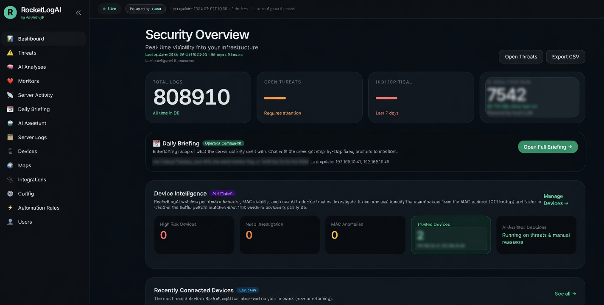
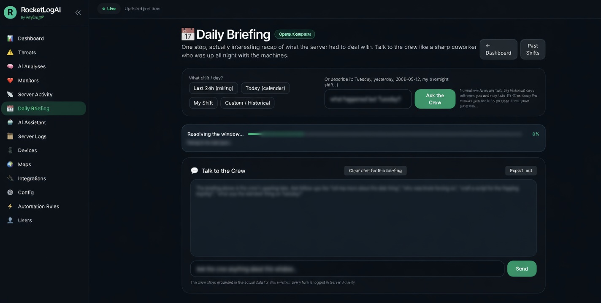
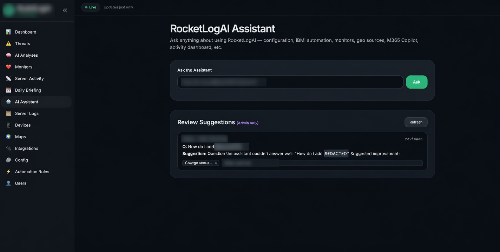
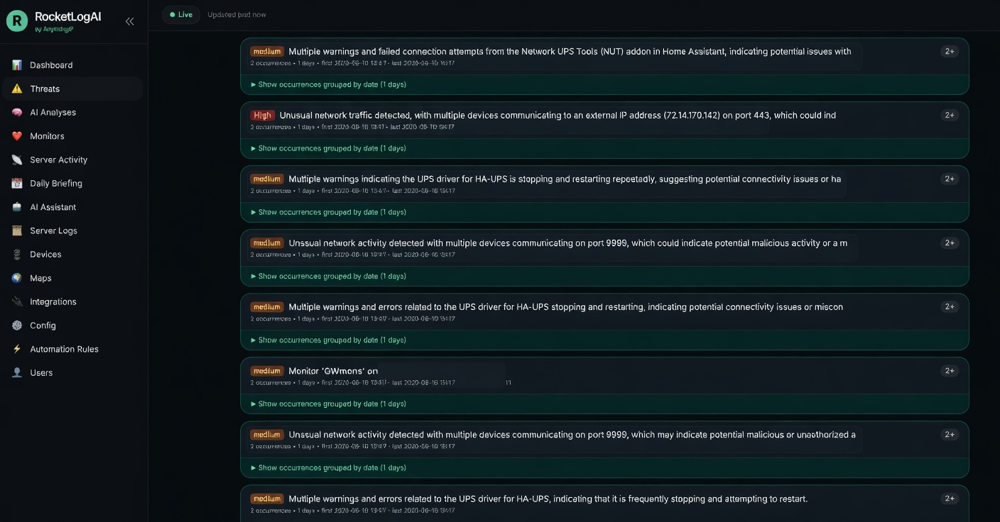
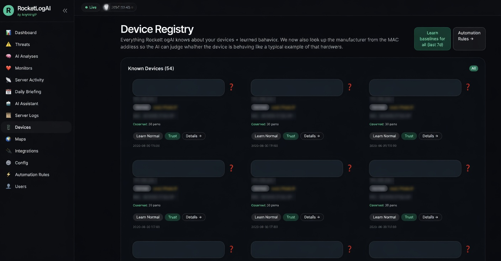
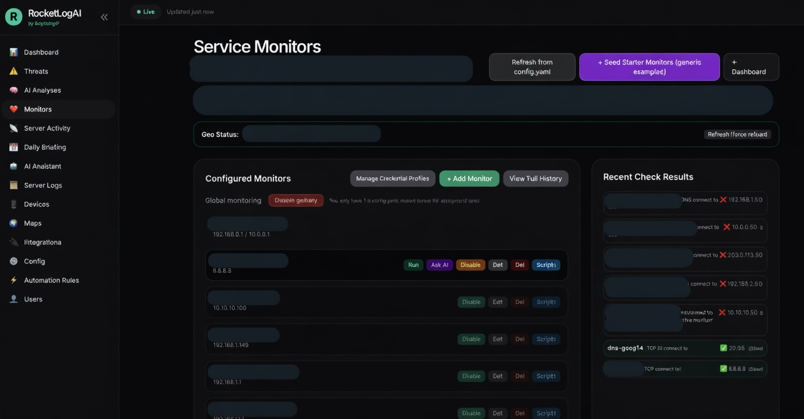
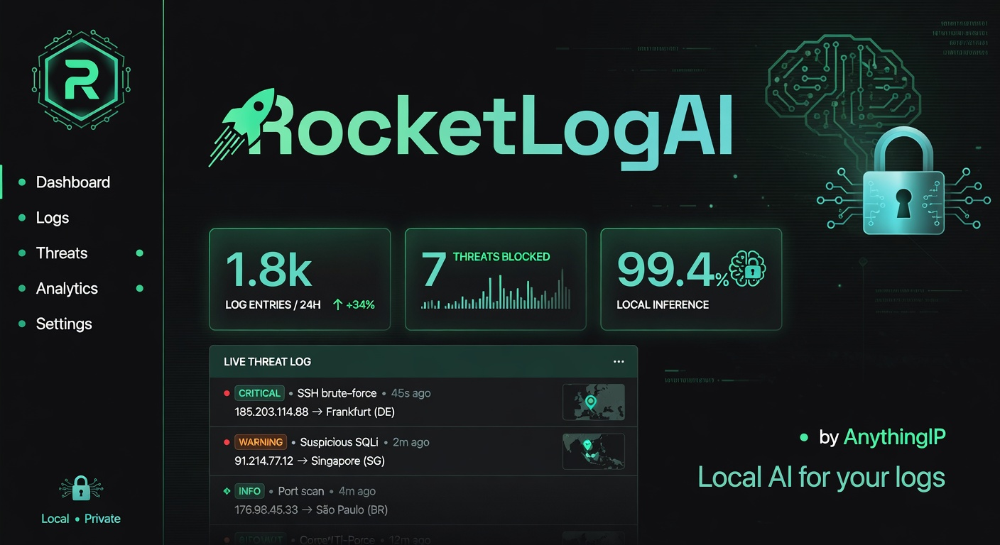

RocketLogAI is an AI-powered local syslog server and security analyzer. It watches everything your devices send, uses your own offline LLM for deep analysis, and keeps every byte on your hardware.
Paste a realistic syslog line (or click an example). This runs the same style of rule engine + structured output that the real local LLM produces in RocketLogAI. A taste of what your instance will show on /threats and in the Daily Briefing.
Fast, calm, information-dense. Built with the same attention to detail as the analysis engine.






Real screenshots from a live instance (with sensitive IPs/hostnames redacted for public sharing). Captured from the actual RocketLogAI UI at port 8787.
The images are now using the clean redacted versions. Originals with full details remain in the folder if you ever need them.
Everything runs on your machine, against your local model, with full transparency and strong safety rails around any automated response.

The full source (Python core, FastAPI web UI, templates, 20+ prebuilt remediation scripts, rules, HA integration, IBM i automation, installers for Linux/Windows/Docker) is on GitHub under the MIT license.
Contributions welcome: new parsers, custom rules, more remediation scripts, better prompts, Windows Event Log support, docs, or anything else that makes local log intelligence better.
git clone https://github.com/AnythingIP/RocketLogAI.git
cd RocketLogAI
cp example-config.yaml config.yaml
# Edit config.yaml — at minimum set llm.base_url
# LM Studio: http://host.docker.internal:1234/v1 (or your LAN IP)
# Ollama: http://host.docker.internal:11434/v1
docker compose up -d --build
# Open http://your-server:8787 (default login: admin / admin — change it!)git clone https://github.com/AnythingIP/RocketLogAI.git
cd RocketLogAI
pip install -e ".[web]"
logsentinel example-config -o config.yaml
# edit llm.base_url in config.yaml
logsentinel run
# or for real syslog port 514: sudo logsentinel run